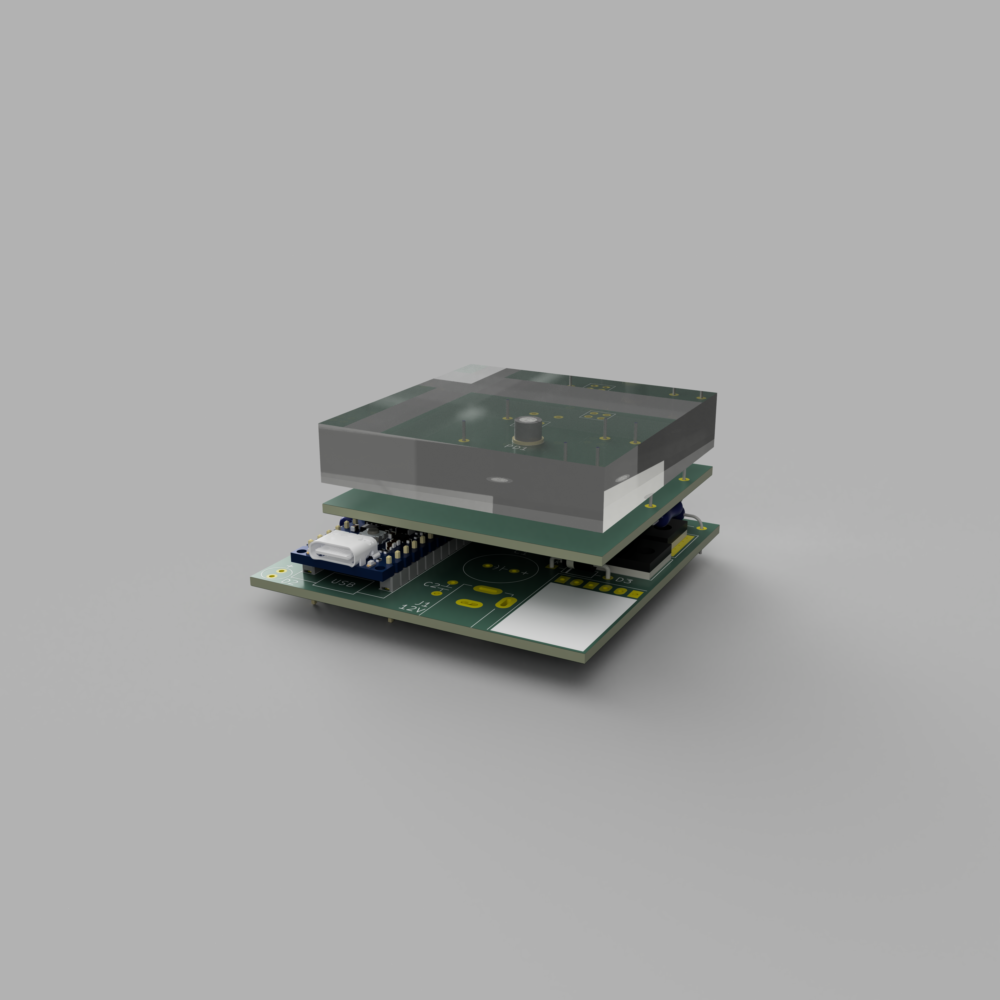

記事の期間が詰まってしまいました．
偶然ですね，更新間隔にはあまり期待していただきたくないところですが...
そんなことはさておき，試作機2号のデータを作成したのでそれについて書き残します．
まず，最初にこれだけ言っておくのですが，この研究の成果は成功したならオープンにしようと考えています．
もちろん成功したらの話ではあるのですが．
せっかく安くしたのに僕しか作れないとかになったら意味がないと思っているからですね．
いっそのこと皆さんに作って皆さんに売ってほしいと願うくらいです．
ただし，現段階でデータを盗用するのはやめてください．
ということで本題に戻ります．
先日に試作機1号を作ったわけですが，まぁまぁ終わっていました．
僕がやらかしたミスは以下の通りです．
お家芸の空中配線によってショート箇所がないことまでは確認しましたが，これはひどかったです．
EasyEDAの自動配線機能はネットクラスが正しく割り当てられていることを条件に使用できる機能です．
回路図上で変な線飛ばしをしたがためにネットクラスが食い違い回路として成立していない箇所がいくつもありました．
そして1号のときは本来は2枚に分ける基板を1枚の同一基板上にむりやり押し込んでしまいました．
おかげさまでノイズも何も，論外な状態でしたので修正します．
ということで完成したデータは以下のようになります．
